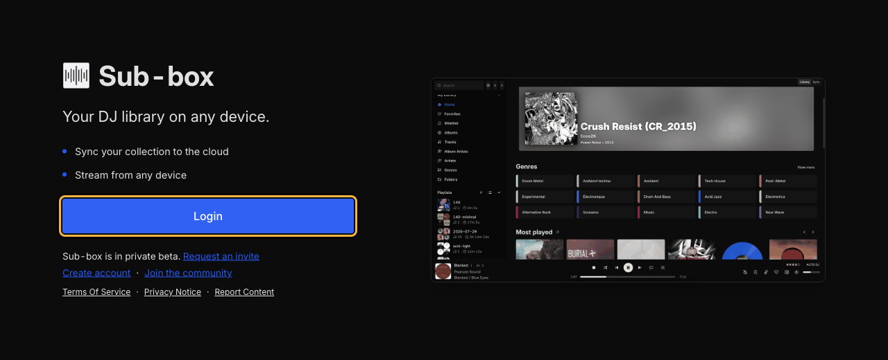
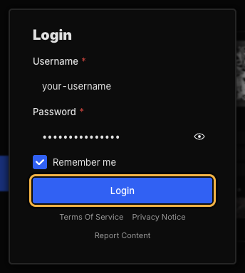
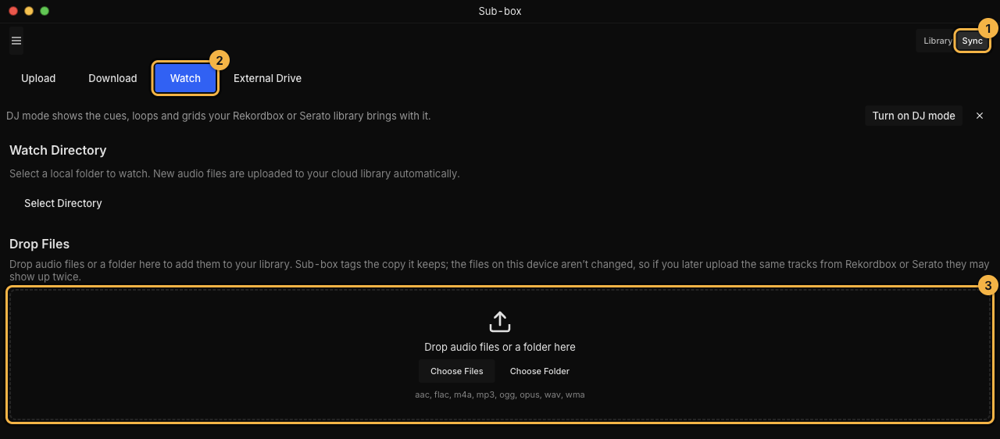
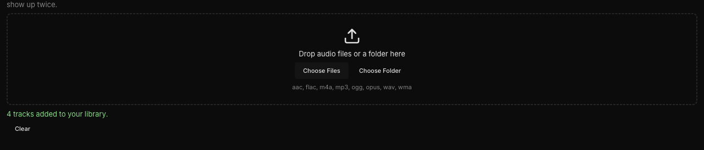
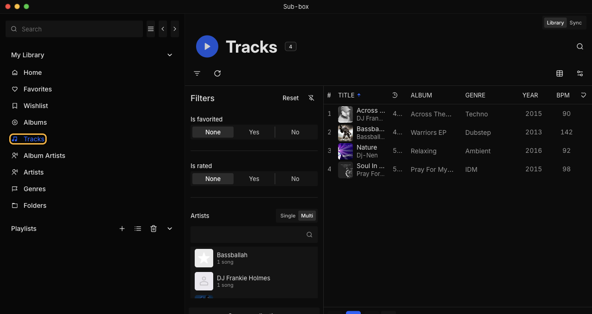
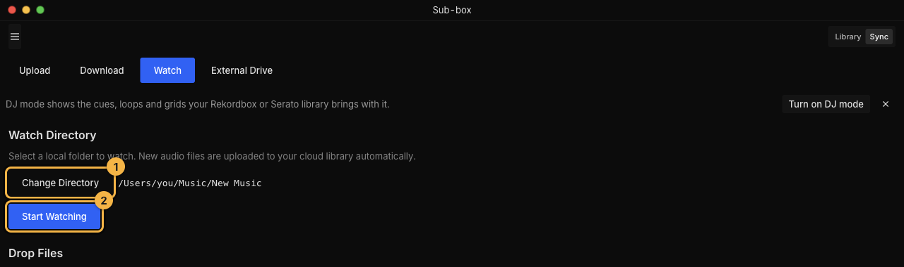

Try Sub-box with a few tracks
Install Sub-box
Download Sub-box. This one file works on every Windows PC.
If your browser says the file isn’t commonly downloaded, choose Keep. In Edge, that’s the … menu, then Keep, Show more, Keep anyway.
Run it. Open the file you downloaded. Windows shows a blue box, Windows protected your PC. Click More info, then Run anyway.
Why? Sub-box isn’t signed with a Microsoft certificate yet, so Windows asks you to confirm you trust it. You only see this when installing.
Finish installing. Keep the default choices and click through to Finish. Sub-box opens, and there’s a shortcut on your desktop.
Sub-box checks for new versions when it starts.
Sign in
Click Login

Enter your username and password and click Login. Leave Remember me ticked so you stay signed in.

Drop in a few tracks
Open the drop box. Click Sync at the top right 1, then Watch 2. Under the folder watcher there’s a box that says Drop audio files or a folder here 3.

Using Sub-box in a web browser instead? The same box is under .
Drag a few tracks onto the box. A handful of favourites is enough to try Sub-box. You can also drop a whole folder, or click Choose Files or Choose Folder instead of dragging.
Your files stay as they are. Sub-box uploads a copy and doesn’t change the files on your computer.
Wait for tracks added to your library. It shows Uploading, then Importing while Sub-box sorts the tracks into your library. Keep Sub-box open until it finishes.

Find your tracks. Click Library at the top right, then Tracks in the sidebar. Click one to play it.

Upload new music automatically
If you save new tracks into one folder, Sub-box can watch it and upload anything that lands there.
Pick the folder. On the same Watch screen, click Select Directory 1 and choose the folder (the button then reads Change Directory). Folders inside it are included. Then click Start Watching 2.

Sub-box uploads every track already in the folder, then each new one you save there, for as long as the app is open. It doesn’t move, rename or convert them, but it does add a small ID tag to each file so it can recognise the track later. Click Stop Watching to turn it off.
Common problems
Some files were “skipped”
Sub-box uploads MP3, FLAC, WAV, AAC, M4A, OGG, Opus and WMA files. Anything else, empty files and folders whose name starts with a dot are skipped, and the list says why. Everything else uploads normally.
Some tracks “have not reached your library”
They uploaded, but Sub-box couldn’t add them to your library, usually because the file is damaged. Take a screenshot and send it to us on Discord.
It says “Storage Limit Reached”
What you dropped adds up to more than the space left on your account. Nothing was uploaded. Drop fewer tracks and try again.
A track shows up twice after I uploaded my Rekordbox or Serato library
Sub-box tags the copy it keeps, not the file on your computer, so it can’t tell that a dropped track and the same track from your DJ library are one track. If you plan to upload your library later, try Sub-box with tracks that aren’t in it, or delete the dropped copies afterwards.
Bring in your playlists and cue points
Dropping files brings in tracks. If you use Rekordbox or Serato, upload your library from there and Sub-box adds your playlists, folders, cue points and beatgrids.